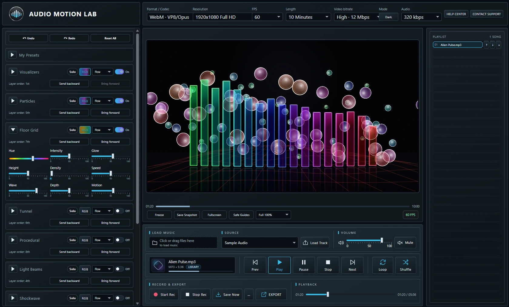
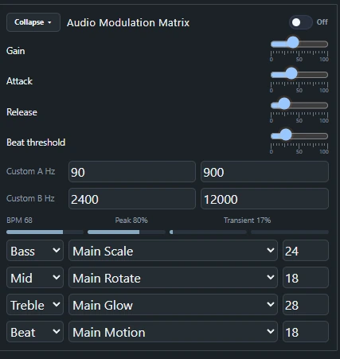
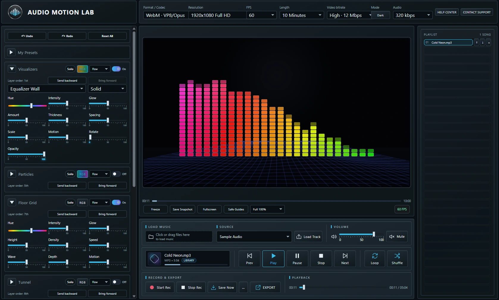
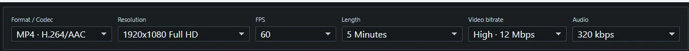
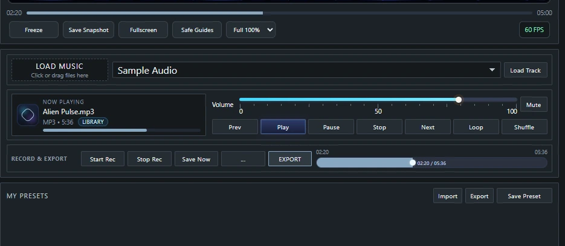

Build reactive visual experiences around your music.
Audio Motion Lab gives you a dedicated workspace for creating layered, customizable visuals that respond to audio in real time. From subtle motion to more dramatic effects, you can shape the look and behavior to fit the music and the mood.
Load your own music or explore the 102 included sample tracks, build playlists, and use custom image or video backgrounds.

Build the look one layer at a time.
Combine visualizers, particles, floor effects, procedural video, light beams, shockwaves, backgrounds, text and logo overlays, and post effects to create a complete visual scene. Each layer has its own controls, and backgrounds can use your own image or video.

Decide how the music drives the visuals.
Route bass, mids, treble, beats and custom frequency ranges to different visual controls such as scale, rotation, glow and motion. Fine tune the response with gain, attack, release and beat threshold controls to shape exactly how the scene reacts to the music.

Put your own identity into the visual.
Add customizable titles, subtitles, images and logos directly into the scene. Control fonts, colors, size, position, opacity, rotation, outlines, glow, animation and other presentation settings while seeing the result in real time.


Create it, save it and export it.
Record or export your finished visual with control over format, resolution, frame rate, duration, video bitrate and audio quality. Save your visual setup as a preset and bring it back later without rebuilding everything from scratch.
See Audio Motion Lab in action.
Watch a guided tour of the visual engine, audio-reactive controls, layers and built-in recording and export workflow.
Watch on YouTube